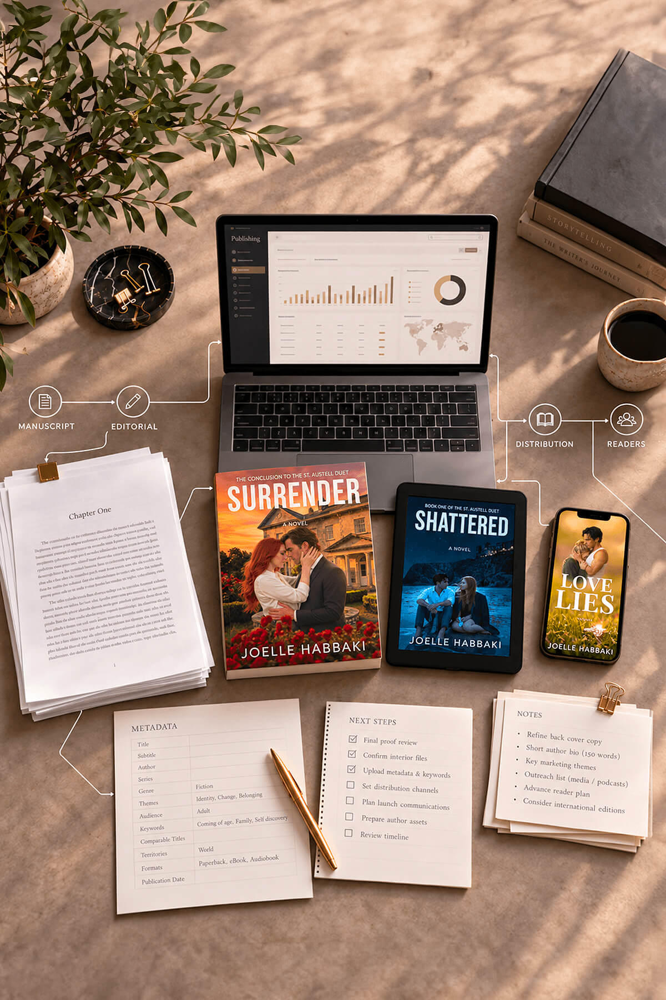
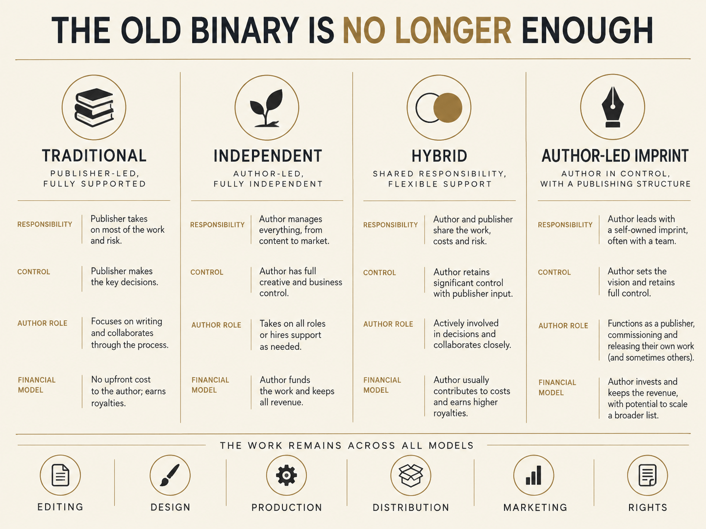
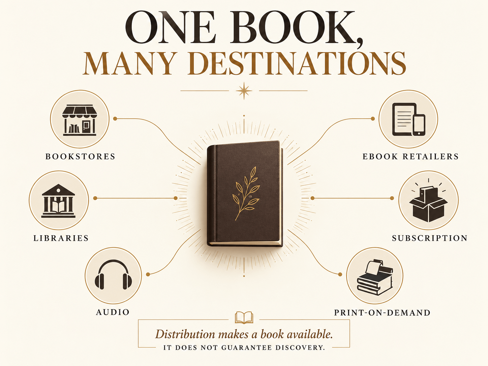
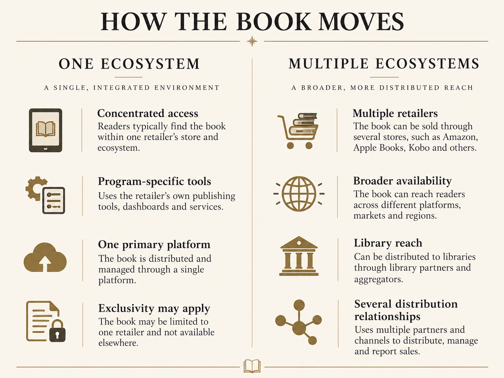
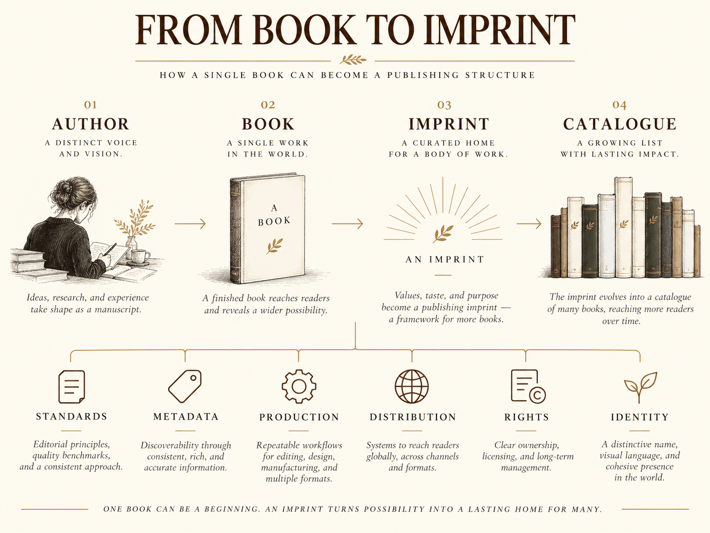
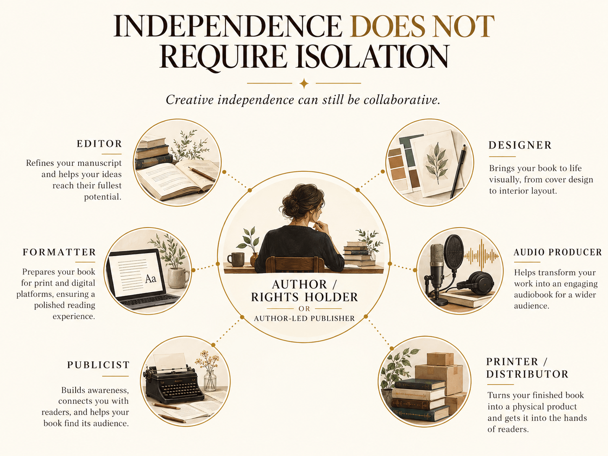

Publishing a book once meant entering an established system. Increasingly, authors can choose which parts of that system to enter, which to build for themselves, and which decisions they are unwilling to surrender.

For a long time, conversations about publishing were framed as a choice between two paths.
A writer could pursue a traditional publishing contract, with a publishing house assuming responsibility for bringing the book to market. Or the writer could self-publish, taking that responsibility on personally.
Both routes still exist. But the space between them has become considerably more complicated.
Authors now move through traditional publishing, independent publishing, hybrid arrangements, author-led imprints, direct retail platforms, aggregators, subscription services, library systems, print-on-demand networks and audiobook channels. Some work entirely within one model. Others use different approaches for different books, formats or stages of a career.
The result is not the disappearance of publishing infrastructure. It is the ability to assemble that infrastructure in different ways.
And that has changed the meaning of independence.

Creative independence is sometimes described as though removing a traditional publisher removes the publishing system itself. It does not.
A finished manuscript still has to become a product that can move through the world. It needs editing, design, formatting, metadata, identifiers, files, pricing, distribution, retailer information and some means of reaching readers.
The work remains. What changes is who performs it, who pays for it, who coordinates it and who makes the final decisions.
A traditional publishing house may provide much of that infrastructure within one organization. A hybrid publisher may provide many of the same services while asking the author to contribute financially. An independent author may hire specialists individually, work through publishing platforms and distributors, or build a small imprint that coordinates those functions under one identity.
Even within traditional publishing, the contract determines which rights are granted and how much control an author retains. The Authors Guild notes that publishing agreements affect both control over the work and compensation, while hybrid arrangements introduce a different allocation of cost, services, royalties and responsibility.
The meaningful distinction, then, is not simply publisher or no publisher. It is how responsibility is divided.
Greater creative control can sound uncomplicated when described from the outside. It is rarely uncomplicated in practice.
Control over a cover also means responsibility for whether that cover communicates the book effectively. Control over pricing means understanding the consequences of that price across different markets. Control over distribution means choosing where a book will appear and understanding what each channel requires.
The same is true of rights. Retaining more rights can preserve future options. Granting rights to a publisher can place the work inside infrastructure, relationships and expertise that may be difficult to reproduce independently.
Neither arrangement is automatically the more sophisticated one. They simply distribute authority differently.
Two authors may both call themselves independent while operating very different businesses. One may distribute a single ebook through one retailer. Another may coordinate print editions, ebooks, audio, library access, international distribution and direct sales through several systems.
The word independent describes who ultimately controls the publishing operation. It does not describe the size or complexity of that operation.
One of the most significant changes has occurred after the book is produced.
Distribution once represented a major barrier for small publishers and individual authors. Digital platforms, print-on-demand systems and wholesale networks have made parts of that infrastructure accessible without requiring ownership of warehouses, printing presses or national sales teams.
Apple Books, for example, allows authors and publishers to submit ebooks directly through its publishing system. IngramSpark makes independently published titles available through a broad network that includes retailers, libraries, schools and online stores, while its print-on-demand infrastructure allows books to be produced closer to where orders occur.
That does not mean every book placed into a distribution network will automatically appear on bookstore shelves or be acquired by libraries. Availability and discoverability are not the same thing. Distribution can make a title available to channel partners; retailers and libraries still decide how, or whether, to list and order it.
But the infrastructure exists. That distinction matters.
An independent publisher can now participate in systems that once required far greater scale simply to enter.

The same expanding infrastructure has created another decision: whether to concentrate a book within one ecosystem or distribute it across several.
Amazon's KDP Select remains one of the clearest examples. An ebook enrolled in the program enters Kindle Unlimited and becomes eligible for certain Amazon promotional tools, but the Kindle ebook must remain exclusive to Amazon for the 90-day enrollment period. Other formats can still be distributed elsewhere.
The alternative often described as going wide places the ebook across multiple retailers and potentially additional library or subscription channels.
Neither approach answers the same strategic question in the same way. Exclusivity concentrates access and promotional opportunities within one ecosystem. Wider distribution prioritizes presence across several.
The author is increasingly asked not merely to produce the book, but to decide how the book should move.

As authors assume more publishing responsibility, some eventually create imprints of their own.
At the simplest level, an imprint can function as the publishing name attached to a book. At a more developed level, it becomes an organizing structure.
Titles can share production standards, visual identity, distribution practices, metadata conventions and long-term rights strategies. Editorial and design relationships can continue across multiple releases. What began as the infrastructure for one book can become the infrastructure for a catalogue.
This is one of the more interesting developments in author-led publishing because it changes the scale of the decision.
That is a substantially different question.

Technology has lowered certain barriers to publishing. It has not eliminated the need to understand what happens behind them.
Publishing dashboards make it possible to upload files, assign prices and select territories. Print-on-demand removes the requirement to manufacture a large print run before a book can be sold. Distribution systems transmit metadata into retailer and library networks. Direct publishing platforms allow rights holders to update files and product information without routing every change through another company.
That accessibility can make publishing appear deceptively simple.
The interface may be simple. The decisions often are not.
Metadata affects how a title is represented and discovered. File preparation affects how it appears on different devices. Print specifications affect cost and quality. Wholesale discounts and returnability can matter to booksellers. Territorial rights determine where a title can legally be sold. Each format can introduce another set of decisions.
The advantage is not freedom from publishing work. It is the ability to decide how that work is done.
This is perhaps the most
persistent misunderstanding
surrounding independent publishing:
Independence does not require isolation.
A novelist does not become less independent by hiring an editor. A publisher does not surrender creative ownership by working with a designer. Distribution partners, proofreaders, formatters, publicists, narrators, printers and other specialists can all participate in an independently controlled publishing process.
Traditional publishing itself is collaborative. Independent publishing can be collaborative too.
The difference lies less in whether other people contribute than in how the relationships are structured and where final authority resides.
The objective is rarely to prove that one person can perform every task. It is to build the combination of expertise, technology and infrastructure that allows the work to reach readers without surrendering the decisions the creator considers essential.

Each label describes something useful. None describes the entire operation.
A traditionally published author may retain some rights and independently exploit others. An independent author may use large corporate distribution systems. A small press may rely on the same wholesalers that serve multinational publishers. A book may be sold by major retailers while still being controlled by the person who wrote it.
Publishing has become increasingly modular.
Editing can come from one place. Print production from another. Ebook distribution from another. Audiobook from another. Retail access from several. Library availability through still another part of the system.
The modern publishing question is therefore becoming less about choosing a single institution and more about deciding which infrastructure belongs around a particular body of work.
And that decision will not look identical for every author.
It is which model is most suitable for the author in question.
Traditional publishing remains valuable to authors who want the resources, expertise, financing and institutional reach that an established publishing house can provide. Independent publishing remains valuable to authors who want greater control over rights, schedules, production and long-term decision-making.
Hybrid publishing occupies another part of the landscape and requires careful evaluation of both the services offered and the contractual terms attached to them. The Authors Guild offers guidance on evaluating those arrangements.
No single structure resolves every competing priority.
The most meaningful change may therefore be that authors increasingly have the ability to decide which of those priorities matter most for a particular project.
That is a more substantial form of independence than simply publishing alone. It is the ability to understand the available systems well enough to choose deliberately among them.
Independence does not mean publishing without infrastructure. It means having a voice in which infrastructure surrounds the work, which responsibilities are shared, and which decisions remain with the creator.